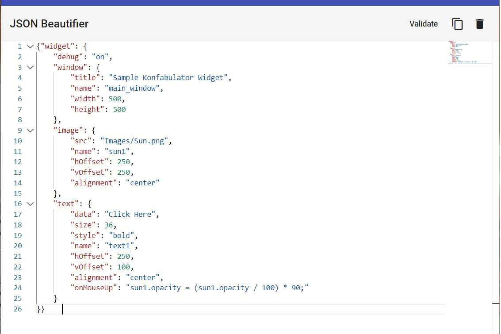
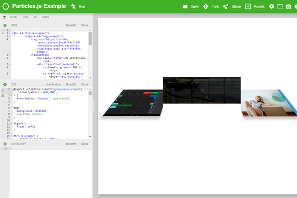
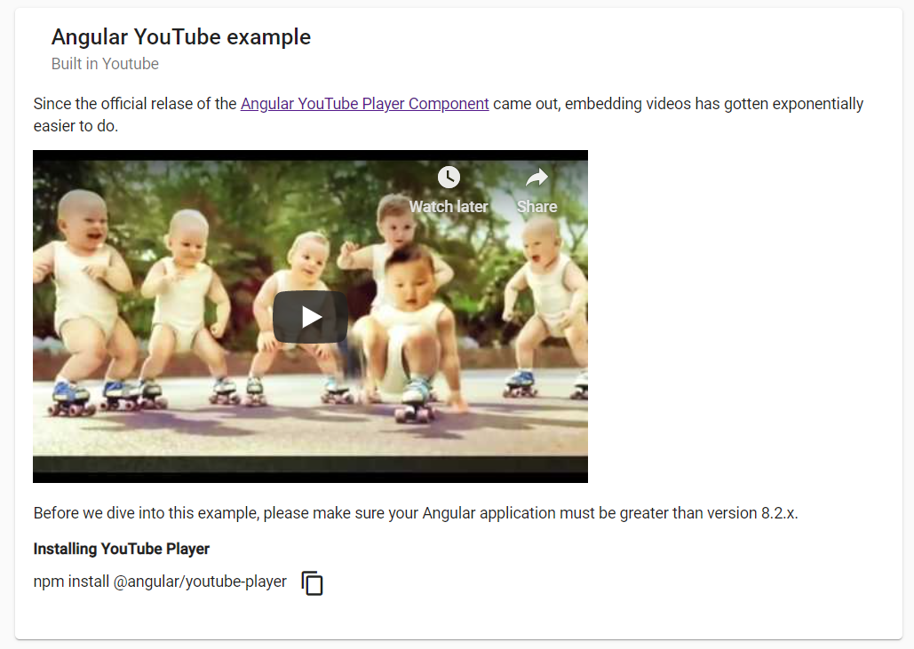
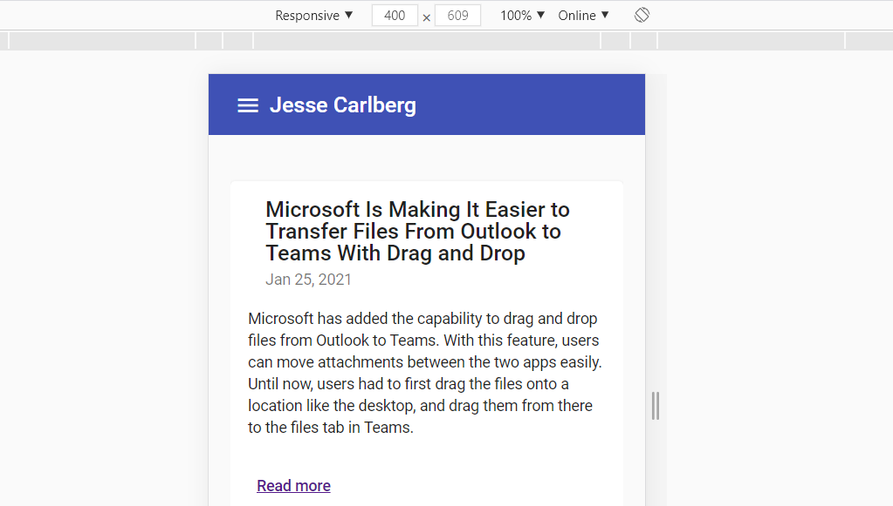
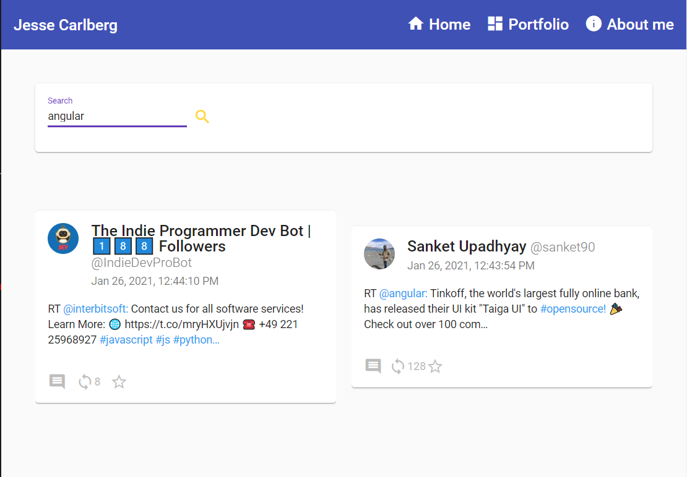
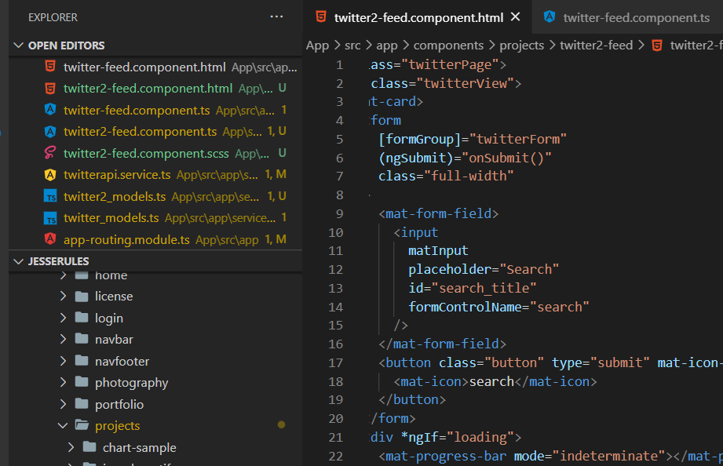
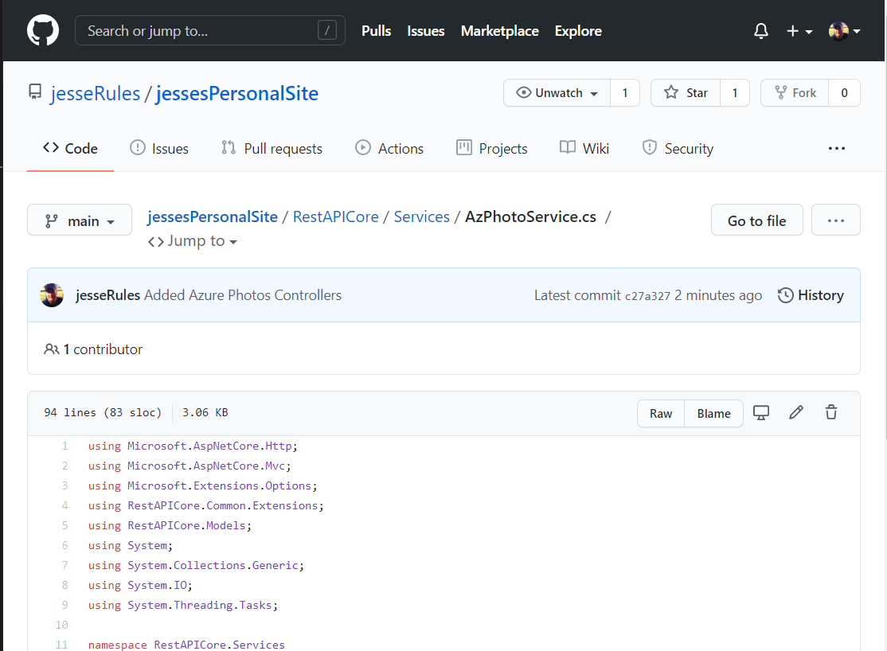

Using Monaco Editor (VS Code) to transform Markdown into HTML and
vice versa. This tool is actually what I use to generate the blog
posts for this site. The output is close to what you would find on
APIs like Medium.
JSON BeautifierLots of quotation marks in a row.

A real straight forward JSON beautifier that doesn't save or do
anything with your data but beautify it. I ended up using this a
ton while coding because although you can do it in Notepad++ and
even VS Code you have to set up the plugins just right and do a
bunch of fancy work. Posting data from APIs to the web always
makes me nervous, so I just made my own.
CodeBox A front-end sandbox

A straightforward front-end sandbox. I use this tool to keep
snippets of code I want to use later. I also use this to try out
some front-end stuff I don't want to have to wait over and over
for it to render. This is clean, simple and built for doing work.
I'm still working on this one, it's rough.
Sample Projects/Code
Easy to use code.
Angular Integrated YoutubeEmbedded videos

Angular flavored Angular developed YouTube player. A real quick
overview on how to integrate YouTube videos into an Angular site.
I include some info embedding videos on other platforms and easy
to fix errors you will run into.
RSS News FeedXML Newsfeed to Angular & JSON

Making the news. Taking an XML RSS news feed and converting it
into JSON. Then taking that JSON and displaying it in pretty
pretty Material Angular. Take a look and see how I did it.
Twitter ExampleUsing Twitter API (Version 1)

A real quick example of using the Twitter API to search tweets and
users. This example has some pretty dope CSS to make it look all
perdy like and also some fancy C# to add comment counts into the
feed.
Twitter API 2 ExampleUsing Twitter API 2

Basically, the same thing as the other Twitter example but this
uses the new and objectively improved Twitter API 2. The users are
stripped out of the twitter feed to make it easier to do analytics
on, but if you want to display the tweets you have to add them
back in. I did that here, but I also have the straight JSON
available too.
Azure Blob StorageUsing Azure to Host Pictures

I needed a way to host pictures for this website and an upcoming
photography website I am working on. I settled on using Azure Blob
Services to host the images. The hosting fees are cheap and it
loads pretty fast. Check the code out and see some examples on
this page.